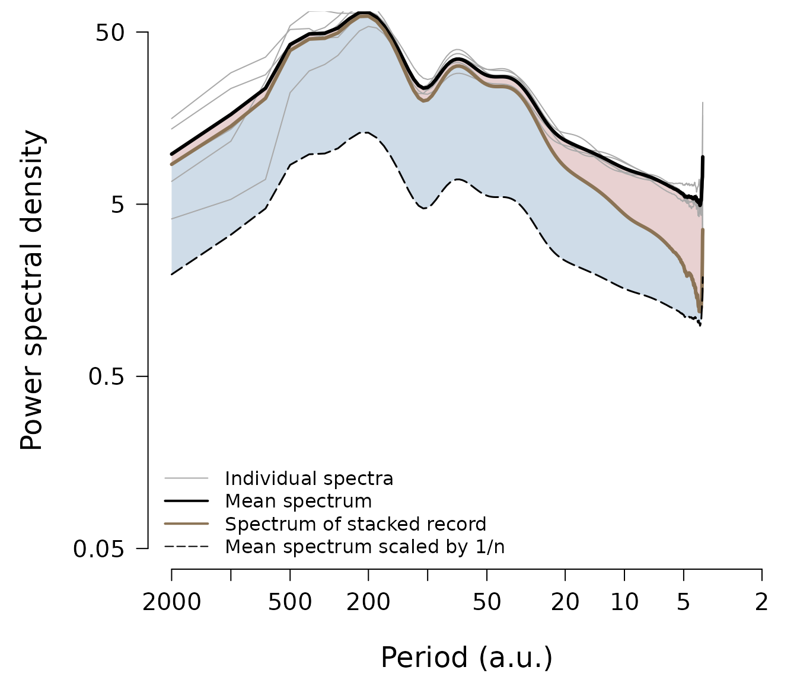
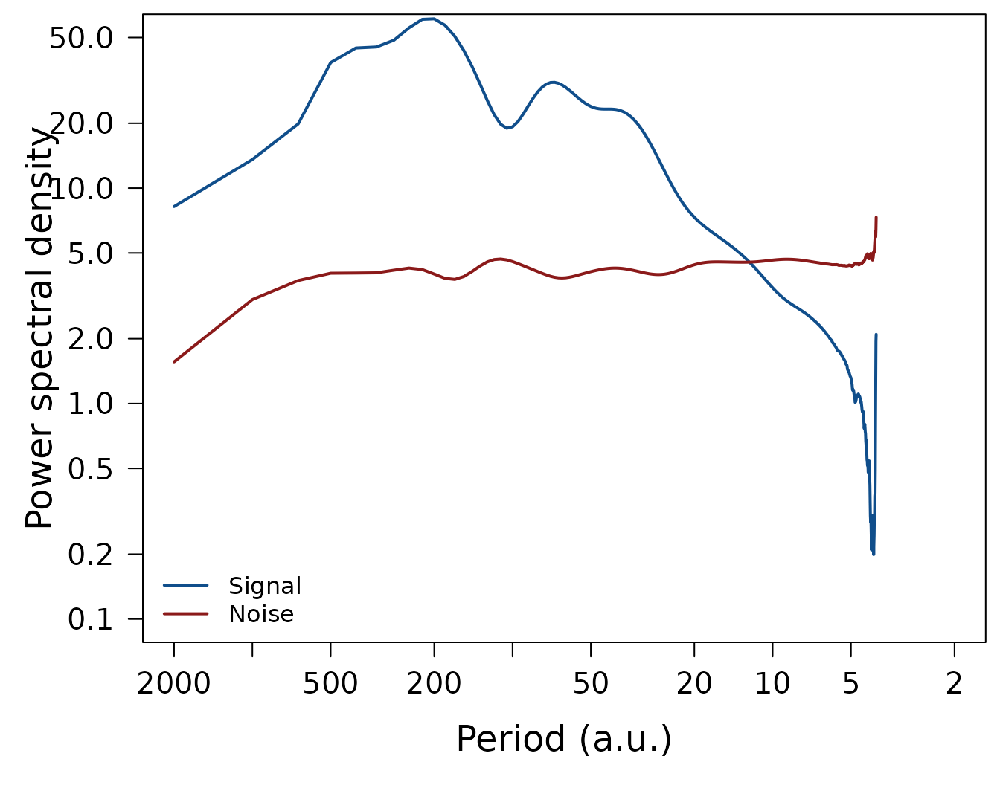
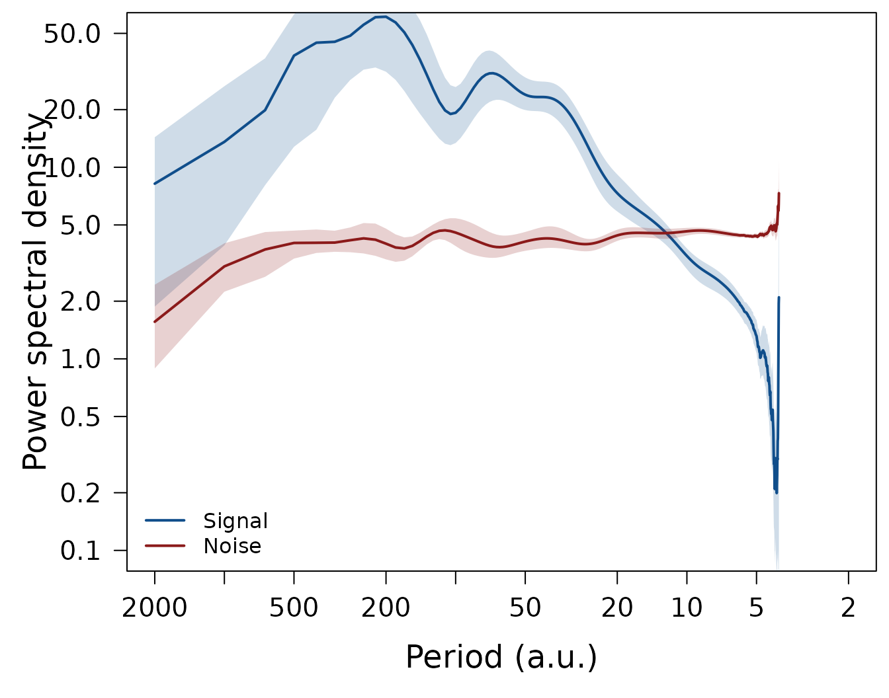

Getting started
With proxysnr you can apply spectral analyses to climate
proxy records that were obtained from a spatial array of proxy
observation locations, e.g. ice cores, marine sediment cores, tree
rings, etc., to derive the power spectral density (PSD, or, in short,
spectrum) of the record’s common signal and the PSD of the local noise
(for details see Münch and Laepple, 2018)
To work with proxysnr, supply the proxy records in form
of a list, or a data frame, with each list element or data column
representing one of the proxy observation locations, where the proxy
data were sampled over time, depth, or any other given variable, at
equal intervals. Note that the equidistance of the sampling intervals is
mandatory to obtain correct spectra.
To showcase the analyses available with proxysnr we
create an artifical proxy dataset which mimicks five observation
locations, each sampling the proxy data at 1000 sampling points:
set.seed(20241030)
# five "cores" (proxy observation locations)
nc <- 5
# number of sampling points (e.g. time steps) at each location
nt <- 1000
# simulate a common climate signal as an AR-1 process
clim <- as.numeric(arima.sim(model = list(ar = 0.7), n = nt))
# simulate the independent proxy noise as a white noise process
noise <- as.data.frame(replicate(nc, rnorm(n = nt, sd = 1.5)))
# create a data frame (i.e. a "spatial array") of five "cores" that record the
# same climate signal (scaled to make it relatively a bit stronger) but
# independent noise
cores <- 1.2 * clim + noiseObtaining and plotting the proxy array spectra
A first step is to calculate the PSD for each proxy record, obtain
the average spectrum of these individual spectra, and get the spectrum
of the data series when averaging across all proxy records (the
“stacked” record); all of which is handled by the function
ObtainArraySpectra(). We only need to set the sampling
resolution via the parameter res (chosen arbitrarily here)
in order to obtain the correct spectral units, and we can apply some
smoothing to the raw spectral estimates (parameter df.log)
to reduce their spectral uncertainty:
arrspec <- ObtainArraySpectra(cores, res = 2, df.log = 0.1)
names(arrspec)
#> [1] "single" "mean" "stack"
attr(arrspec, "array.par")
#> nc nt res
#> 5 1000 2The output list contains the attribute array.par which
stores information on the underlying proxy record array, namely the
number of records (“nc”), the number of sampling points per record
(“nt”), and the sampling resolution (“res”), so that other
proxysnr functions have these information available.
The function PlotArraySpectra() directly plots the
results:
PlotArraySpectra(arrspec, remove = 0, xlim = c(2000, 2), ylim = c(0.05, 50),
xlab = "Period (a.u.)", ylab = "Power spectral density")
The plot displays the spectra as a function of the inverse spectral frequency, e.g. time period, which is often more intuitive to interpret. Each proxy record’s spectrum is shown as a thin grey line (however, you can change all colours to your likings), and the mean spectrum of all individual spectra is plotted as the thick black line, which averages out some spectral uncertainty of the individual spectra and thus delivers a more accurate representation of the average proxy PSD. If all proxy record variations were indepedent noise, the spectrum of the stacked record (thick brown line) would follow the line of the mean spectrum divided by the number of records, i.e. the black dashed line on the plot. Hence, the PSD of the spectrum of the stacked record which exceeds this line (the blue shaded area) results from proxy variability common to all records, while the spectral energy which is lost (the red shaded area) represents independent noise variability.
When you do not need to save the intermediate results, you can also pipe the workflow,
cores %>%
ObtainArraySpectra(res = 2, df.log = 0.1) %>%
PlotArraySpectra(remove = 0, xlim = c(2000, 2), ylim = c(0.05, 50),
xlab = "Period (a.u.)", ylab = "Power spectral density")and in the following we always show the combined, piped workflow in
order to highlight how the proxysnr functions are
linked.
Signal and noise spectra
While the previous plot is visually insightful, the blue and red
shaded areas are only proportional to the actual signal and noise
spectra (see Münch and Laepple, 2018 for details); these are instead
calculated using SeparateSignalFromNoise() which delivers
also the spectrum of the signal-to-noise ratio, which is an important
quantity to interpret proxy variability in terms of climate
variability.
spec <- cores %>%
ObtainArraySpectra(res = 2, df.log = 0.1) %>%
SeparateSignalFromNoise()
str(spec)
#> List of 3
#> $ signal:List of 2
#> ..$ freq: num [1:500] 0.0005 0.001 0.0015 0.002 0.0025 0.003 0.0035 0.004 0.0045 0.005 ...
#> ..$ spec: num [1:500] 8.21 13.57 19.86 38.26 44.7 ...
#> ..- attr(*, "class")= chr "spec"
#> $ noise :List of 2
#> ..$ freq: num [1:500] 0.0005 0.001 0.0015 0.002 0.0025 0.003 0.0035 0.004 0.0045 0.005 ...
#> ..$ spec: num [1:500] 1.56 3.04 3.72 4.03 4.04 ...
#> ..- attr(*, "class")= chr "spec"
#> $ snr :List of 2
#> ..$ freq: num [1:500] 0.0005 0.001 0.0015 0.002 0.0025 0.003 0.0035 0.004 0.0045 0.005 ...
#> ..$ spec: num [1:500] 5.26 4.47 5.33 9.5 11.08 ...
#> ..- attr(*, "class")= chr "spec"
#> - attr(*, "array.par")= Named num [1:3] 5 1000 2
#> ..- attr(*, "names")= chr [1:3] "nc" "nt" "res"There are two plotting routines available in proxysnr,
LPlot() and LLines(), to plot any spectral
object returned by its functions automatically on double-logarithmic
axes. These follow the concept of base R’s plot() and
lines() functions and can thus make a fresh spectrum plot
or add a spectrum to an existing plot. So to plot the results from our
analyses in spec we can write
op <- par(mar = c(5, 5, 0.5, 0.5), las = 1,
cex.main = 1.5, cex.lab = 1.5, cex.axis = 1.25)
LPlot(spec$signal, inverse = TRUE,
xlab = "Period (a.u.)", ylab = "Power spectral density",
xlim = c(2000, 2), ylim = c(0.1, 50), col = "dodgerblue4", lwd = 2)
LLines(spec$noise, inverse = TRUE, col = "firebrick4", lwd = 2)
legend("bottomleft", c("Signal", "Noise"), col = c("dodgerblue4", "firebrick4"),
lty = 1, lwd = 2, bty = "n")
LPlot(spec$snr, inverse = TRUE, xlab = "Period (a.u.)", ylab = "SNR",
xlim = c(2000, 2), ylim = c(0.1, 50), col = "black", lwd = 2)
par(op)
We can test whether the estimated noise spectrum indeed reproduces
the standard deviation of 1.5 of the given white noise
process:
Estimating confidence intervals
Since confidence intervals for the signal, noise, and SNR spectra
cannot be obtained analytically, proxysnr offers to
estimate these from a parametric bootstrapping procedure based on Monte
Carlo simulation of surrogate data:
spec <- cores %>%
ObtainArraySpectra(res = 2, df.log = 0.1) %>%
SeparateSignalFromNoise() %>%
EstimateCI(nmc = 10, df.log = 0.1, ci.df.log = 0.05)The plotting routines LPlot() and LLines()
automatically add a shading for the confidence intervals to the plot,
when such are available, so the same above plotting code can be used to
reproduce the plots now including the only just estimated confidence
intervals:

Correction of signal and noise spectra
During archiving, the proxy records may be subject to smoothing, e.g. in firn and ice by diffusion, or in marine sediments by bioturbation. Furthermore, if the proxy records are dated their chronologies may be uncertain between the records, with this time uncertainty affecting the reconstruction of the common signal.
proxysnr offers to correct the estimated signal and
noise spectra for these effects by supplying respective transfer
functions to SeparateSignalFromNoise() via the function
parameters diffusion and time.uncertainty.
These transfer functions describe the loss in spectral power due to the
smoothing or the uncertain chronologies and need to be assessed and
provided by the user.
For two special cases you can apply proxysnr to directly
calculate the transfer functions: firn diffusion (function
CalculateDiffusionTF()) and time uncertainty in
layer-counted chronologies (function
CalculateTimeUncertaintyTF()); see also Münch and Laepple
(2018) for more details on the processes and the implemented estimation,
and the vignette("calculate-transfer-functions") for
details on using the two functions.
Proxy records also contain measurement noise. If you have an estimate
of its magnitude and its spectral shape, you can supply these
information to SeparateSignalFromNoise() via the
measurement.noise parameter, and the returned noise and SNR
spectra will be corrected for the measurement noise, i.e. they will take
into account only the proxy-specific noise that was created during the
archiving process.
Further analysis options
There are some more proxysnr functions you can use to
conduct and visualise analyses:
-
GetIntegratedSNR()delivers the ratio of the integrated signal and noise spectra, which corresponds to the SNR at a specific sampling resolution; -
ObtainStackCorrelation()calculates the expected correlation of a stack of proxy records with the common climate signal as a function of the number of records averaged and the records’ sampling resolution (see Fig. 4 in Münch and Laepple, 2018 for an example); -
PlotStackCorrelation()to directly plot the output fromObtainStackCorrelation(); -
PlotSNR()to plot several SNR datasets in one figure; -
PlotTF()to make a plot of the transfer functions obtained withCalculateDiffusionTF()and/orCalculateTimeUncertaintyTF().
Package data
proxysnr ships with four package datasets:
-
?dmlcontains the oxygen isotope data of 15 firn cores from Dronning Maud Land (DML), Antarctica (Graf et al., 2002); -
?waiscontains the oxygen isotope data of 5 firn cores from the West Antarctic Ice Sheet (WAIS; Steig, 2013); -
?diffusion.tfcontains pre-calculated diffusion transfer functions for the DML and WAIS isotope records; and -
?time.uncertainty.tfcontains pre-calculated time uncertainty transfer functions for these records.
The datasets can be used to test out the functions from
proxysnr, and they have been the basis for the analyses in
Münch and Laepple (2018); see also the
vignette("plot-muench-laepple-figures") for reproducing
their results.
References
Graf, W., et al.: Stable-isotope records from Dronning Maud Land, Antarctica, PANGAEA, doi: 10.1594/PANGAEA.728240, 2002.
Münch, T. and Laepple, T.: What climate signal is contained in decadal- to centennial-scale isotope variations from Antarctic ice cores?, Clim. Past, 14, 2053-2070, doi: 10.5194/cp-14-2053-2018, 2018.
Steig, E. J.: West Antarctica Ice Core and Climate Model Data, U.S. Antarctic Program (USAP) Data Center, doi: 10.7265/N5QJ7F8B, 2013.